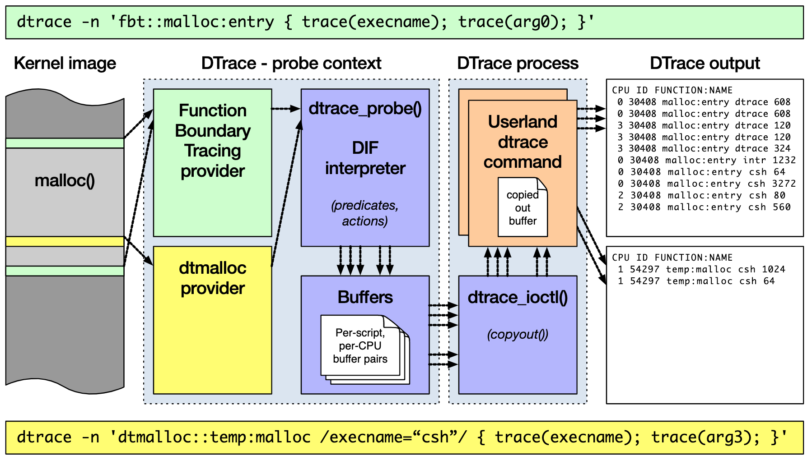
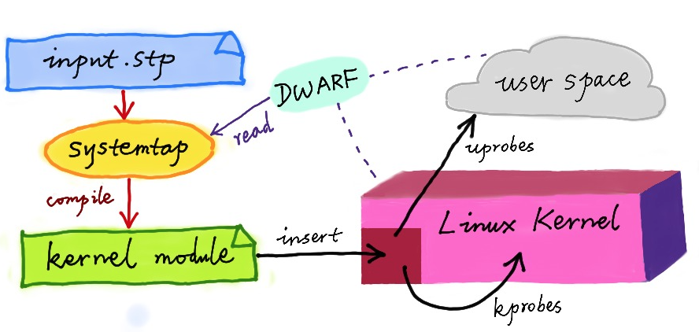
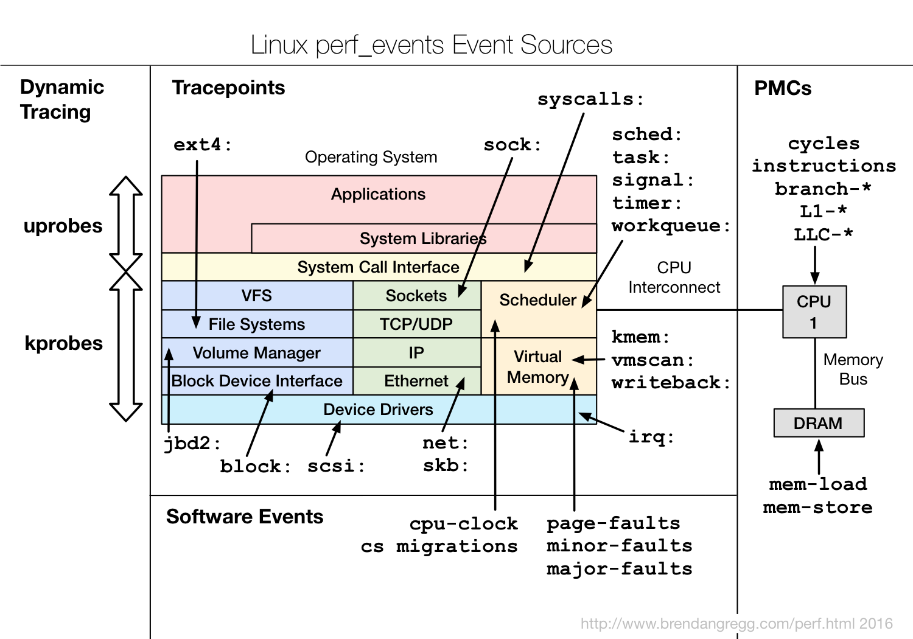

- 00 开篇词 别再让Linux性能问题成为你的绊脚石.md.html
- 01 如何学习Linux性能优化？.md.html
- 02 基础篇：到底应该怎么理解“平均负载”？.md.html
- 03 基础篇：经常说的 CPU 上下文切换是什么意思？（上）.md.html
- 04 基础篇：经常说的 CPU 上下文切换是什么意思？（下）.md.html
- 05 基础篇：某个应用的CPU使用率居然达到100%，我该怎么办？.md.html
- 06 案例篇：系统的 CPU 使用率很高，但为啥却找不到高 CPU 的应用？.md.html
- 07 案例篇：系统中出现大量不可中断进程和僵尸进程怎么办？（上）.md.html
- 08 案例篇：系统中出现大量不可中断进程和僵尸进程怎么办？（下）.md.html
- 09 基础篇：怎么理解Linux软中断？.md.html
- 10 案例篇：系统的软中断CPU使用率升高，我该怎么办？.md.html
- 11 套路篇：如何迅速分析出系统CPU的瓶颈在哪里？.md.html
- 12 套路篇：CPU 性能优化的几个思路.md.html
- 13 答疑（一）：无法模拟出 RES 中断的问题，怎么办？.md.html
- 14 答疑（二）：如何用perf工具分析Java程序？.md.html
- 15 基础篇：Linux内存是怎么工作的？.md.html
- 16 基础篇：怎么理解内存中的Buffer和Cache？.md.html
- 17 案例篇：如何利用系统缓存优化程序的运行效率？.md.html
- 18 案例篇：内存泄漏了，我该如何定位和处理？.md.html
- 19 案例篇：为什么系统的Swap变高了（上）.md.html
- 20 案例篇：为什么系统的Swap变高了？（下）.md.html
- 21 套路篇：如何“快准狠”找到系统内存的问题？.md.html
- 22 答疑（三）：文件系统与磁盘的区别是什么？.md.html
- 23 基础篇：Linux 文件系统是怎么工作的？.md.html
- 24 基础篇：Linux 磁盘I_O是怎么工作的（上）.md.html
- 25 基础篇：Linux 磁盘I_O是怎么工作的（下）.md.html
- 26 案例篇：如何找出狂打日志的“内鬼”？.md.html
- 27 案例篇：为什么我的磁盘I_O延迟很高？.md.html
- 28 案例篇：一个SQL查询要15秒，这是怎么回事？.md.html
- 29 案例篇：Redis响应严重延迟，如何解决？.md.html
- 30 套路篇：如何迅速分析出系统I_O的瓶颈在哪里？.md.html
- 31 套路篇：磁盘 I_O 性能优化的几个思路.md.html
- 32 答疑（四）：阻塞、非阻塞 I_O 与同步、异步 I_O 的区别和联系.md.html
- 33 关于 Linux 网络，你必须知道这些（上）.md.html
- 34 关于 Linux 网络，你必须知道这些（下）.md.html
- 35 基础篇：C10K 和 C1000K 回顾.md.html
- 36 套路篇：怎么评估系统的网络性能？.md.html
- 37 案例篇：DNS 解析时快时慢，我该怎么办？.md.html
- 38 案例篇：怎么使用 tcpdump 和 Wireshark 分析网络流量？.md.html
- 39 案例篇：怎么缓解 DDoS 攻击带来的性能下降问题？.md.html
- 40 案例篇：网络请求延迟变大了，我该怎么办？.md.html
- 41 案例篇：如何优化 NAT 性能？（上）.md.html
- 42 案例篇：如何优化 NAT 性能？（下）.md.html
- 43 套路篇：网络性能优化的几个思路（上）.md.html
- 44 套路篇：网络性能优化的几个思路（下）.md.html
- 45 答疑（五）：网络收发过程中，缓冲区位置在哪里？.md.html
- 46 案例篇：为什么应用容器化后，启动慢了很多？.md.html
- 47 案例篇：服务器总是时不时丢包，我该怎么办？（上）.md.html
- 48 案例篇：服务器总是时不时丢包，我该怎么办？（下）.md.html
- 49 案例篇：内核线程 CPU 利用率太高，我该怎么办？.md.html
- 50 案例篇：动态追踪怎么用？（上）.md.html
- 51 案例篇：动态追踪怎么用？（下）.md.html
- 52 案例篇：服务吞吐量下降很厉害，怎么分析？.md.html
- 53 套路篇：系统监控的综合思路.md.html
- 54 套路篇：应用监控的一般思路.md.html
- 55 套路篇：分析性能问题的一般步骤.md.html
- 56 套路篇：优化性能问题的一般方法.md.html
- 57 套路篇：Linux 性能工具速查.md.html
- 58 答疑（六）：容器冷启动如何性能分析？.md.html
- 加餐（一） 书单推荐：性能优化和Linux 系统原理.md.html
- 加餐（二） 书单推荐：网络原理和 Linux 内核实现.md.html
- 用户故事 “半路出家 ”，也要顺利拿下性能优化！.md.html
- 用户故事 运维和开发工程师们怎么说？.md.html
- 结束语 愿你攻克性能难关.md.html
- 捐赠
50 案例篇：动态追踪怎么用？（上）
你好，我是倪朋飞。
上一节，我以 ksoftirqd CPU 使用率高的问题为例，带你一起学习了内核线程 CPU 使用率高时的分析方法。先简单回顾一下。
当碰到内核线程的资源使用异常时，很多常用的进程级性能工具，并不能直接用到内核线程上。这时，我们就可以使用内核自带的 perf 来观察它们的行为，找出热点函数，进一步定位性能瓶颈。不过，perf 产生的汇总报告并不直观，所以我通常也推荐用火焰图来协助排查。
其实，使用 perf 对系统内核线程进行分析时，内核线程依然还在正常运行中，所以这种方法也被称为动态追踪技术。
动态追踪技术，通过探针机制，来采集内核或者应用程序的运行信息，从而可以不用修改内核和应用程序的代码，就获得丰富的信息，帮你分析、定位想要排查的问题。
以往，在排查和调试性能问题时，我们往往需要先为应用程序设置一系列的断点（比如使用 GDB），然后以手动或者脚本（比如 GDB 的 Python 扩展）的方式，在这些断点处分析应用程序的状态。或者，增加一系列的日志，从日志中寻找线索。
不过，断点往往会中断应用的正常运行；而增加新的日志，往往需要重新编译和部署。这些方法虽然在今天依然广泛使用，但在排查复杂的性能问题时，往往耗时耗力，更会对应用的正常运行造成巨大影响。
此外，这类方式还有大量的性能问题。比如，出现的概率小，只有线上环境才能碰到。这种难以复现的问题，亦是一个巨大挑战。
而动态追踪技术的出现，就为这些问题提供了完美的方案：它既不需要停止服务，也不需要修改应用程序的代码；所有一切还按照原来的方式正常运行时，就可以帮你分析出问题的根源。
同时，相比以往的进程级跟踪方法（比如 ptrace），动态追踪往往只会带来很小的性能损耗（通常在 5% 或者更少）。
既然动态追踪有这么多好处，那么，都有哪些动态追踪的方法，又该如何使用这些动态追踪方法呢？今天，我就带你一起来看看这个问题。由于动态追踪涉及的知识比较多，我将分为上、下两篇为你讲解，先来看今天这部分内容。
动态追踪
说到动态追踪（Dynamic Tracing），就不得不提源于 Solaris 系统的 DTrace。DTrace 是动态追踪技术的鼻祖，它提供了一个通用的观测框架，并可以使用 D 语言进行自由扩展。
DTrace 的工作原理如下图所示。它的运行常驻在内核中，用户可以通过 dtrace 命令，把D 语言编写的追踪脚本，提交到内核中的运行时来执行。DTrace 可以跟踪用户态和内核态的所有事件，并通过一些列的优化措施，保证最小的性能开销。

（图片来自 BSDCan）
虽然直到今天，DTrace 本身依然无法在 Linux 中运行，但它同样对 Linux 动态追踪产生了巨大的影响。很多工程师都尝试过把 DTrace 移植到 Linux 中，这其中，最著名的就是 RedHat 主推的 SystemTap。
同 DTrace 一样，SystemTap 也定义了一种类似的脚本语言，方便用户根据需要自由扩展。不过，不同于 DTrace，SystemTap 并没有常驻内核的运行时，它需要先把脚本编译为内核模块，然后再插入到内核中执行。这也导致 SystemTap 启动比较缓慢，并且依赖于完整的调试符号表。

（图片来自动态追踪技术漫谈）
总的来说，为了追踪内核或用户空间的事件，Dtrace 和 SystemTap 都会把用户传入的追踪处理函数（一般称为 Action），关联到被称为探针的检测点上。这些探针，实际上也就是各种动态追踪技术所依赖的事件源。
动态追踪的事件源
根据事件类型的不同，动态追踪所使用的事件源，可以分为静态探针、动态探针以及硬件事件等三类。它们的关系如下图所示：

（图片来自 Brendan Gregg Blog）
其中，硬件事件通常由性能监控计数器 PMC（Performance Monitoring Counter）产生，包括了各种硬件的性能情况，比如 CPU 的缓存、指令周期、分支预测等等。
静态探针，是指事先在代码中定义好，并编译到应用程序或者内核中的探针。这些探针只有在开启探测功能时，才会被执行到；未开启时并不会执行。常见的静态探针包括内核中的跟踪点（tracepoints）和 USDT（Userland Statically Defined Tracing）探针。
跟踪点（tracepoints），实际上就是在源码中插入的一些带有控制条件的探测点，这些探测点允许事后再添加处理函数。比如在内核中，最常见的静态跟踪方法就是 printk，即输出日志。Linux 内核定义了大量的跟踪点，可以通过内核编译选项，来开启或者关闭。
USDT 探针，全称是用户级静态定义跟踪，需要在源码中插入 DTRACE_PROBE() 代码，并编译到应用程序中。不过，也有很多应用程序内置了 USDT 探针，比如 MySQL、PostgreSQL 等。
动态探针，则是指没有事先在代码中定义，但却可以在运行时动态添加的探针，比如函数的调用和返回等。动态探针支持按需在内核或者应用程序中添加探测点，具有更高的灵活性。常见的动态探针有两种，即用于内核态的 kprobes 和用于用户态的 uprobes。
kprobes 用来跟踪内核态的函数，包括用于函数调用的 kprobe 和用于函数返回的 kretprobe。
uprobes 用来跟踪用户态的函数，包括用于函数调用的 uprobe 和用于函数返回的 uretprobe。
注意，kprobes 需要内核编译时开启 CONFIG_KPROBE_EVENTS；而 uprobes 则需要内核编译时开启 CONFIG_UPROBE_EVENTS。
动态追踪机制
而在这些探针的基础上，Linux 也提供了一系列的动态追踪机制，比如 ftrace、perf、eBPF 等。
ftrace 最早用于函数跟踪，后来又扩展支持了各种事件跟踪功能。ftrace 的使用接口跟我们之前提到的 procfs 类似，它通过 debugfs（4.1 以后也支持 tracefs），以普通文件的形式，向用户空间提供访问接口。
这样，不需要额外的工具，你就可以通过挂载点（通常为 /sys/kernel/debug/tracing 目录）内的文件读写，来跟 ftrace 交互，跟踪内核或者应用程序的运行事件。
perf 是我们的老朋友了，我们在前面的好多案例中，都使用了它的事件记录和分析功能，这实际上只是一种最简单的静态跟踪机制。你也可以通过 perf ，来自定义动态事件（perf probe），只关注真正感兴趣的事件。
eBPF 则在 BPF（Berkeley Packet Filter）的基础上扩展而来，不仅支持事件跟踪机制，还可以通过自定义的 BPF 代码（使用 C 语言）来自由扩展。所以，eBPF 实际上就是常驻于内核的运行时，可以说就是 Linux 版的 DTrace。
除此之外，还有很多内核外的工具，也提供了丰富的动态追踪功能。最常见的就是前面提到的 SystemTap，我们之前多次使用过的 BCC（BPF Compiler Collection），以及常用于容器性能分析的 sysdig 等。
而在分析大量事件时，使用我们上节课提到的火焰图，可以将大量数据可视化展示，让你更直观发现潜在的问题。
接下来，我就通过几个例子，带你来看看，要怎么使用这些机制，来动态追踪内核和应用程序的执行情况。以下案例还是基于 Ubuntu 18.04 系统，同样适用于其他系统。
注意，以下所有命令都默认以 root 用户运行，如果你用普通用户身份登陆系统，请运行 sudo su root 命令切换到 root 用户。
ftrace
我们先来看 ftrace。刚刚提到过，ftrace 通过 debugfs（或者 tracefs），为用户空间提供接口。所以使用 ftrace，往往是从切换到 debugfs 的挂载点开始。
$ cd /sys/kernel/debug/tracing
$ ls
README instances set_ftrace_notrace trace_marker_raw
available_events kprobe_events set_ftrace_pid trace_options
...
如果这个目录不存在，则说明你的系统还没有挂载 debugfs，你可以执行下面的命令来挂载它：
$ mount -t debugfs nodev /sys/kernel/debug
ftrace 提供了多个跟踪器，用于跟踪不同类型的信息，比如函数调用、中断关闭、进程调度等。具体支持的跟踪器取决于系统配置，你可以执行下面的命令，来查询所有支持的跟踪器：
$ cat available_tracers
hwlat blk mmiotrace function_graph wakeup_dl wakeup_rt wakeup function nop
这其中，function 表示跟踪函数的执行，function_graph 则是跟踪函数的调用关系，也就是生成直观的调用关系图。这便是最常用的两种跟踪器。
除了跟踪器外，使用 ftrace 前，还需要确认跟踪目标，包括内核函数和内核事件。其中，
函数就是内核中的函数名。
而事件，则是内核源码中预先定义的跟踪点。
同样地，你可以执行下面的命令，来查询支持的函数和事件：
$ cat available_filter_functions
$ cat available_events
明白了这些基本信息，接下来，我就以 ls 命令为例，带你一起看看 ftrace 的使用方法。
为了列出文件，ls 命令会通过 open 系统调用打开目录文件，而 open 在内核中对应的函数名为 do_sys_open。 所以，我们要做的第一步，就是把要跟踪的函数设置为 do_sys_open：
$ echo do_sys_open > set_graph_function
接下来，第二步，配置跟踪选项，开启函数调用跟踪，并跟踪调用进程：
$ echo function_graph > current_tracer
$ echo funcgraph-proc > trace_options
接着，第三步，也就是开启跟踪：
$ echo 1 > tracing_on
第四步，执行一个 ls 命令后，再关闭跟踪：
$ ls
$ echo 0 > tracing_on
第五步，也是最后一步，查看跟踪结果：
$ cat trace
# tracer: function_graph
#
# CPU TASK/PID DURATION FUNCTION CALLS
# | | | | | | | | |
0) ls-12276 | | do_sys_open() {
0) ls-12276 | | getname() {
0) ls-12276 | | getname_flags() {
0) ls-12276 | | kmem_cache_alloc() {
0) ls-12276 | | _cond_resched() {
0) ls-12276 | 0.049 us | rcu_all_qs();
0) ls-12276 | 0.791 us | }
0) ls-12276 | 0.041 us | should_failslab();
0) ls-12276 | 0.040 us | prefetch_freepointer();
0) ls-12276 | 0.039 us | memcg_kmem_put_cache();
0) ls-12276 | 2.895 us | }
0) ls-12276 | | __check_object_size() {
0) ls-12276 | 0.067 us | __virt_addr_valid();
0) ls-12276 | 0.044 us | __check_heap_object();
0) ls-12276 | 0.039 us | check_stack_object();
0) ls-12276 | 1.570 us | }
0) ls-12276 | 5.790 us | }
0) ls-12276 | 6.325 us | }
...
在最后得到的输出中：
第一列表示运行的 CPU；
第二列是任务名称和进程 PID；
第三列是函数执行延迟；
最后一列，则是函数调用关系图。
你可以看到，函数调用图，通过不同级别的缩进，直观展示了各函数间的调用关系。
当然，我想你应该也发现了 ftrace 的使用缺点——五个步骤实在是麻烦，用起来并不方便。不过，不用担心， trace-cmd 已经帮你把这些步骤给包装了起来。这样，你就可以在同一个命令行工具里，完成上述所有过程。
你可以执行下面的命令，来安装 trace-cmd ：
# Ubuntu
$ apt-get install trace-cmd
# CentOS
$ yum install trace-cmd
安装好后，原本的五步跟踪过程，就可以简化为下面这两步：
$ trace-cmd record -p function_graph -g do_sys_open -O funcgraph-proc ls
$ trace-cmd report
...
ls-12418 [000] 85558.075341: funcgraph_entry: | do_sys_open() {
ls-12418 [000] 85558.075363: funcgraph_entry: | getname() {
ls-12418 [000] 85558.075364: funcgraph_entry: | getname_flags() {
ls-12418 [000] 85558.075364: funcgraph_entry: | kmem_cache_alloc() {
ls-12418 [000] 85558.075365: funcgraph_entry: | _cond_resched() {
ls-12418 [000] 85558.075365: funcgraph_entry: 0.074 us | rcu_all_qs();
ls-12418 [000] 85558.075366: funcgraph_exit: 1.143 us | }
ls-12418 [000] 85558.075366: funcgraph_entry: 0.064 us | should_failslab();
ls-12418 [000] 85558.075367: funcgraph_entry: 0.075 us | prefetch_freepointer();
ls-12418 [000] 85558.075368: funcgraph_entry: 0.085 us | memcg_kmem_put_cache();
ls-12418 [000] 85558.075369: funcgraph_exit: 4.447 us | }
ls-12418 [000] 85558.075369: funcgraph_entry: | __check_object_size() {
ls-12418 [000] 85558.075370: funcgraph_entry: 0.132 us | __virt_addr_valid();
ls-12418 [000] 85558.075370: funcgraph_entry: 0.093 us | __check_heap_object();
ls-12418 [000] 85558.075371: funcgraph_entry: 0.059 us | check_stack_object();
ls-12418 [000] 85558.075372: funcgraph_exit: 2.323 us | }
ls-12418 [000] 85558.075372: funcgraph_exit: 8.411 us | }
ls-12418 [000] 85558.075373: funcgraph_exit: 9.195 us | }
...
你会发现，trace-cmd 的输出，跟上述 cat trace 的输出是类似的。
通过这个例子我们知道，当你想要了解某个内核函数的调用过程时，使用 ftrace ，就可以跟踪到它的执行过程。
小结
今天，我带你一起学习了常见的动态追踪方法。所谓动态追踪，就是在系统或应用程序正常运行时，通过内核中提供的探针来动态追踪它们的行为，从而辅助排查出性能瓶颈。
而在 Linux 系统中，常见的动态追踪方法包括 ftrace、perf、eBPF 以及 SystemTap 等。当你已经定位了某个内核函数，但不清楚它的实现原理时，就可以用 ftrace 来跟踪它的执行过程。至于其他动态追踪方法，我将在下节课继续为你详细解读。
思考
最后，给你留一个思考题。今天的案例中，我们使用Linux 内核提供的 ftrace 机制，来了解内核函数的执行过程；而上节课我们则用了 perf 和火焰图，来观察内核的调用堆栈。
根据这两个案例，你觉得这两种方法有什么不一样的地方？当需要了解内核的行为时，如何在二者中选择，或者说，这两种方法分别适用于什么样的场景呢？你可以结合今天的内容，和你自己的操作记录，来总结思路。
欢迎在留言区和我讨论，也欢迎把这篇文章分享给你的同事、朋友。我们一起在实战中演练，在交流中进步。
© 2019 - 2023 Liangliang Lee. Powered by gin and hexo-theme-book.